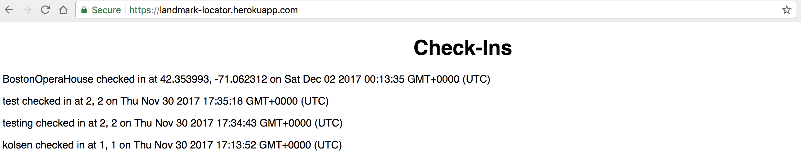

- Page Found:
- Severity of Issue: High
- Description:
- Proof of vulnerability:
- Resolution:
Checkins (https://landmark-locator.herokuapp.com/)
An attacker could exploit this vulnerabilty within the web application to send the victim malicious script/data or redirect the victim to another page that has malicious script/data. Furthermore, the attacker can steal cookie information, display annoying messages, and present all users with fraudulent web content.
Injecting an 'alert' script into the login paramter and sending via curl to POST /sendLocation yielded an alert to pop up on web application 'Check-Ins' page (See image below). Furthermore, injecting script to redirect to another webpage into the login paramter and sending via curl to POST /sendLocation resulted in the webpage 'Check-Ins' to redirect to 4chan.org (See image below).
Popup of alert on 'Check-Ins' page (https://landmark-locator.herokuapp.com/).
Redirection of Check-Ins page to 4chan.org
Never trust user input. Currently, the code only validates lat and lng. One should add a validator that only recieves login information that has no special characters. This will strip any characters such as < , / , " , ' , and > so that no script, style, or event handlers can be executed.
- Page Found:
- Severity of Issue: High
- Description:
- Proof of vulnerability:
- Resolution:
checkins.json (https://landmark-locator.herokuapp.com/checkins.json?login=______ )
Private information of the user (id, location, and checked-in time) can be revealed to the attacker and exploited.
Through exploiting MongoDB injections, the query for https://landmark-locator.herokuapp.com/checkins.json can be changed to provide all logins. This is through the parameter [$ne]=LOGIN where LOGIN is the login that you do not want to be returned. For this test, the query was changed to checkins.json?login[$ne]=kolsen (LINK: https://landmark-locator.herokuapp.com/checkins.json?login[$ne]=kolsen). Results for all check-ins, besides the check-ins matching the lgoin 'kolsen', are returned and displayed.
Displaying all last check-ins, excluding the login 'kolsen'.
To resolve this, a web proxy can be used to intercept the request to the server. The proxy can then alter the request from the client to the server such that the JSON response does not reveal any user private information.
- Page Found:
- Severity of Issue: Low
- Description:
- Proof of vulnerability:
- Resolution:
sendLocation (https://landmark-locator.herokuapp.com/sendLocation)
When inputting the login, lat, lng parameters via curl in terminal, the web application crashes if not all parameteres are satisfied. An 'Application Error' in Heroku suggests a larger internal error with the code. A simple fix in code would resolve this error. There is no large threat of attack, but the web application does not work for the user if all parameters are not entered.
According to guidelines, the web application should return '{"error":"Whoops, something is wrong with your data!"}' when not all parameters (login, lat, lng) are entered correctly. However, sending only lat and lng or only login via curl in terminal results in an 'Application Error' on Heroku.
Only lat and lng parameters sent via curl in terminal.
Only login parameter sent via curl.
The same 'Application Error' response seen above was also obtained for when only login and lat or login and lng were sent via curl in terminal.
Analyzing the code for the app landmark-locator, a variable containing the JSON response {"error":"Whoops, something is wrong with your data!"} should be addded. For the case when the parameter is undefined, there should be a response.send of the variable containing the JSON. Altering a bit of the original code, see below for the addition of the JSON response.
Code including the variable 'error' was added.
- Page Found:
- sendLocation (https://landmark-locator.herokuapp.com/sendLocation)
- Check-ins (https://landmark-locator.herokuapp.com/)
- checkins.json (https://landmark-locator.herokuapp.com/checkins.json?login=_____ )
- Severity of Issue: High
- Description:
- Proof of vulnerability:
- Resolution:
Pages that store and display location information:
The ability to see the location of where you are and pin point other users' locations on the map via a collection database, sharing a server, or sending via curl in terminal is a high privacy and security risk. Hackers or unauthorized users could access this information and exploit it.
True privacy is when one is practically invisible and their geolocation is not detected. The code in landmark-locator uses Google Map API to provide geolocation. Thus, the user is not invisible and an attacker can detect where the user physically is and when they checked in to this location. Furthermore, when connecting to a database, sharing a server, or sending information via curl in terminal, one can pin point the physical location of other users as well. In the code, there is not an alert provided to the user about geolocation being used or the privacy issues entailed with geolocation.
Pages that display location information are proof of the vulnerability. Furthermore, the return of locations of people and landmarks on terminal show the vulnerability.
Terminal response for sending login, lat, and lng via curl.

Check-ins and checkins.json (for login) page displaying location of users


The user should be aware of the geolocation privacy issues when using the web application. This could be made aware through self-education or having an alert pop up when using the web app that allows the user to choose whether they want their location to be accessed.